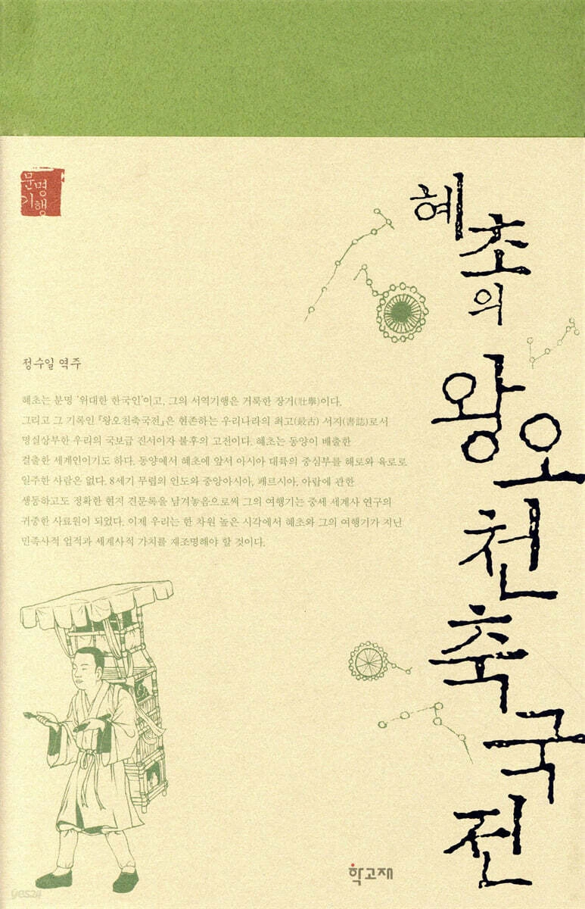
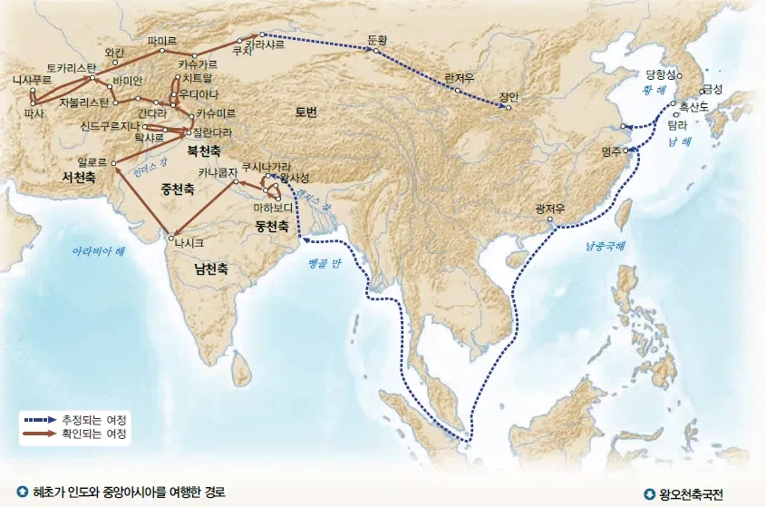
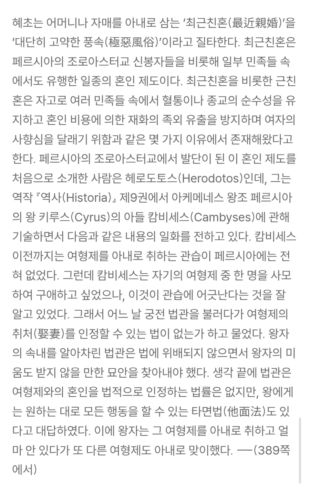
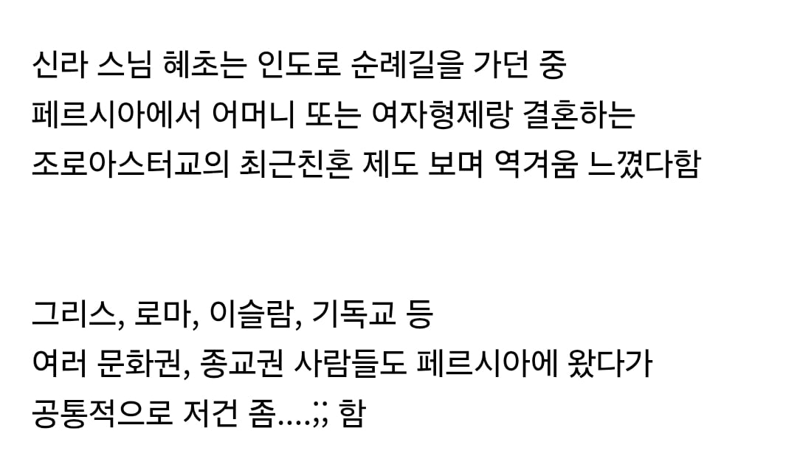

엄산당은요?
엄산당 시발ㅋㅋㅋㅋㅋㅋㅋㅋㅋ별 말이 다 있네 ㅋㅋㅋㅋㅋ
ㅅㅂ ㅋㅋㅋㅋㅋㅋㅋㅋ
음흉하게 엄산당 빼먹는 거 봐라
근데 신라가 근친혼 가지고 남 욕할 처지인가...
신라도 근친혼 심각한 나라 아니었나???
사촌끼리 결혼했으니
페르시아에선 1촌 간 결혼도 있던 걸 보고 저건 좀... 한 듯. 신라도 3촌 간 결혼은 진흥왕 부모, 아들, 김유신, 효성왕, 흥덕왕, 진성여왕 등 꽤나 이루어지긴 했음
남매혼도 2촌인데 1촌...?
https://www.dogdrip.net/697465007
위 사례랑 반대로 당나라로 간 페르시아 후손이 자기 아내 비문에다가 페르시아 문자로 사실 내 딸이기도 함 ㅋㅋㅋㅋ 이라고 티배깅 갈긴 경우도 있더라...
4촌, 3촌간 결혼은 중세에 드문일은 아니였지만
1촌, 2촌간 근친혼은 좀...
왕권강화 목적으로 흔하지 않음?
신라도 혈통유지문제 때문에 그런거지 일반인들까지 근친해댄건 아니지.
근데 누나는 어쩔 수 없음
이게 맞다
지랄 시나이데 씨발;
너는 왜 할머니 할아버지가 두명이야?????
왕오천축국전 = 인도 오고간 썰 푼다
씨발 엄마하고 결혼을 한다고...?
나를 낳아준 아내
태어난 곳으로 돌아가는 연어처럼
조로아스터가 가르침 내용 보면 꽤 괜찮다 싶다가도
특유의 문화랑 관습들이 ㄹㅇ 어이터짐
'아니...왜....? 이렇게까지...?' 싶어짐
나름 현대에는 조로아스터 악습들 많이 없어졌다는데
테에엥 마마
하여튼 마교놈들은 상종을 하면 안된다
왕족 순수혈통 유지를 극한으로 추구하다 저 꼴이 난건가? 크킹에서 능력치만 추구하다보면 개족보 꼴 나듯이
조로아스터교가 마교라 배척받은 이유가 저건가?
팩트는 근친은 모두 멸종되었다
조로아스터교-성스러운불을 신봉함-배화교-마교
여윽시 사악한 마교종자답군.
여진족 누선족은 멸종해야만 한다